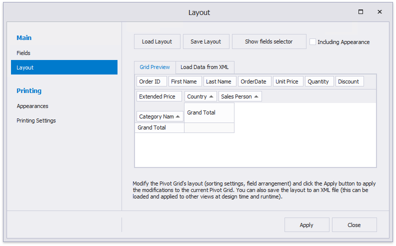
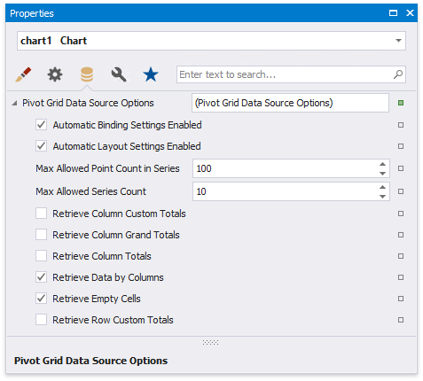

Link a Chart and a Pivot Grid
This tutorial demonstrates how to use the Chart control to visualize the Pivot Grid control's data.
Create a Pivot Grid
Drop the Pivot Grid control from the Toolbox onto the Detail band.

Open the Toolbar's Pivot Grid Tools contextual tab and click Add Data Source to bind the pivot grid to data.

Navigate through the invoked Data Source Wizard's pages to set up the data source. See the Bind to Data section for more information.
After the data source is created, the Pivot Grid's Data Source and Data Member properties are assigned automatically.
Switch the Pivot Grid Tools toolbar tab and click Run Designer. In the invoked Designer, click Retrieve Fields to obtain fields from the control's data source.

Switch to the Layout page and drag-and-drop the data fields onto the Row Fields, Column Fields and Data Items areas to define the Pivot Grid's layout.

Click Apply and close the Designer.
Link a Chart with the Pivot grid
Drop the Chart control from the Toolbox onto the Detail band below the Pivot Grid.

The Chart Designer is invoked automatically after you drop the Chart onto the Detail band. Switch to the Data tab at the right of the Designer's window and choose the Pivot Grid in the drop-down list.

This adjusts all the Chart's binding and layout settings autmatically. Make sure that Series, Argument and Value cells are filled with the corresponding fields. Note that field values are generated based on the Pivot Grid's columns, rows, and data items.

Select the Label node under auto-generated series in the chart elements tree and switch to the Options tab. Disable the Visibility check box to avoid overlapping series labels.

(optionally) You can customize various settings that determine a linked Chart and Pivot Grid pair's common behavior. To do this, use the Chart's Pivot Grid Data Source Options property. This property is synchronized with the Pivot Grid's Options Chart Data Source property.

View the Result
Switch to Print Preview to see the resulting report.